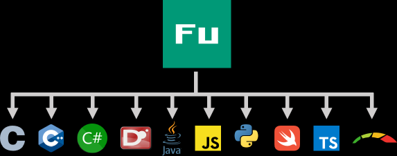

Fusion is a programming language designed for implementing reusable components (libraries) for C, C++, C#, D, Java, JavaScript, Python, Swift, TypeScript and OpenCL C, all from single codebase.
A "Hello, world" library:
public class HelloFu { public static string GetMessage() { return "Hello, world!"; } }
can be translated to all the listed languages with:
fut -o hello.c,cpp,cs,d,java,js,py,swift,ts,cl hello.fu
The translated code is lightweight (no virtual machine, emulation nor dependencies), human-readable and fits well with the target language, including naming conventions and documentation comments.
Check out Fusion Playground in your browser.
For further instructions, see Getting Started.